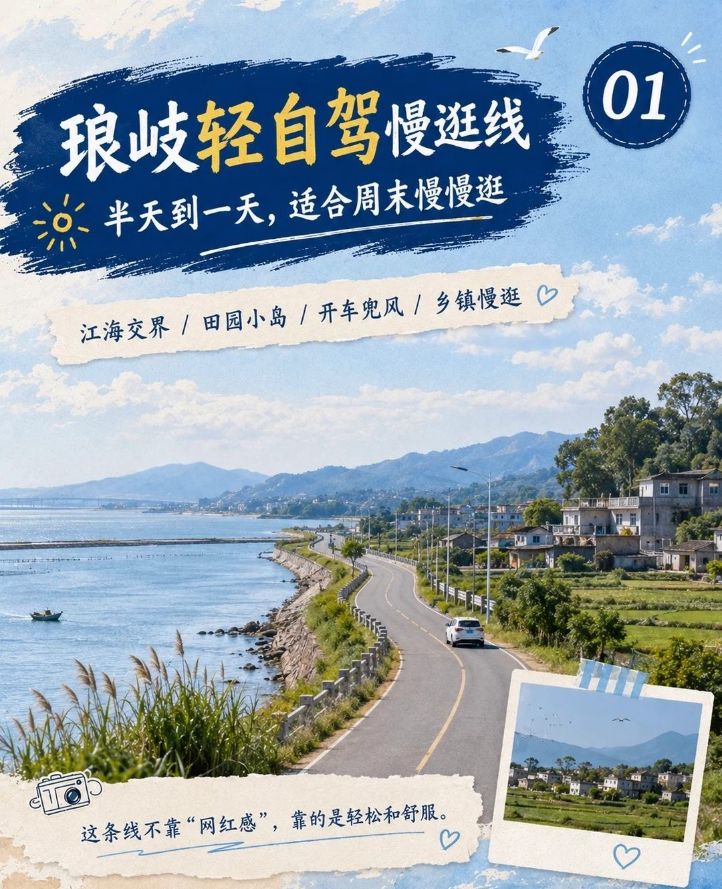
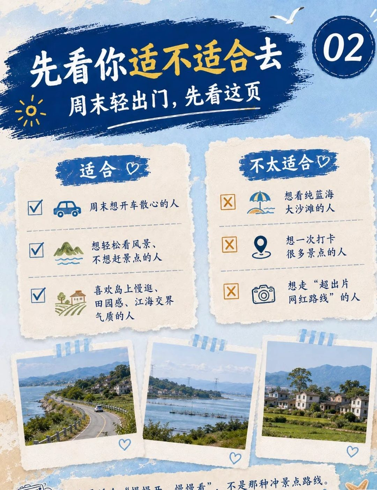
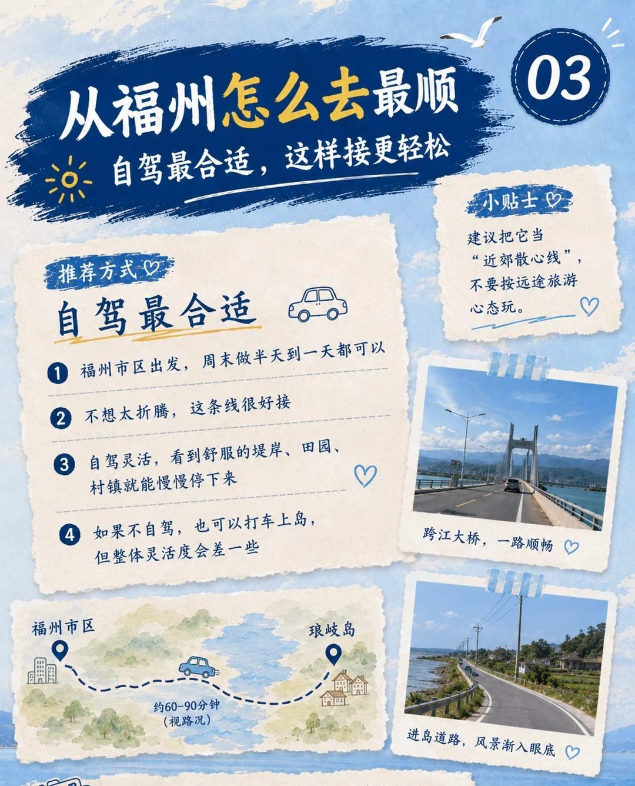
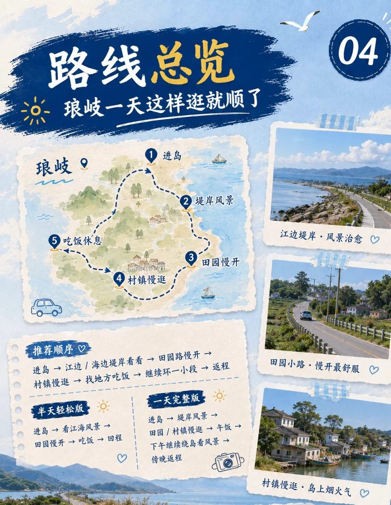
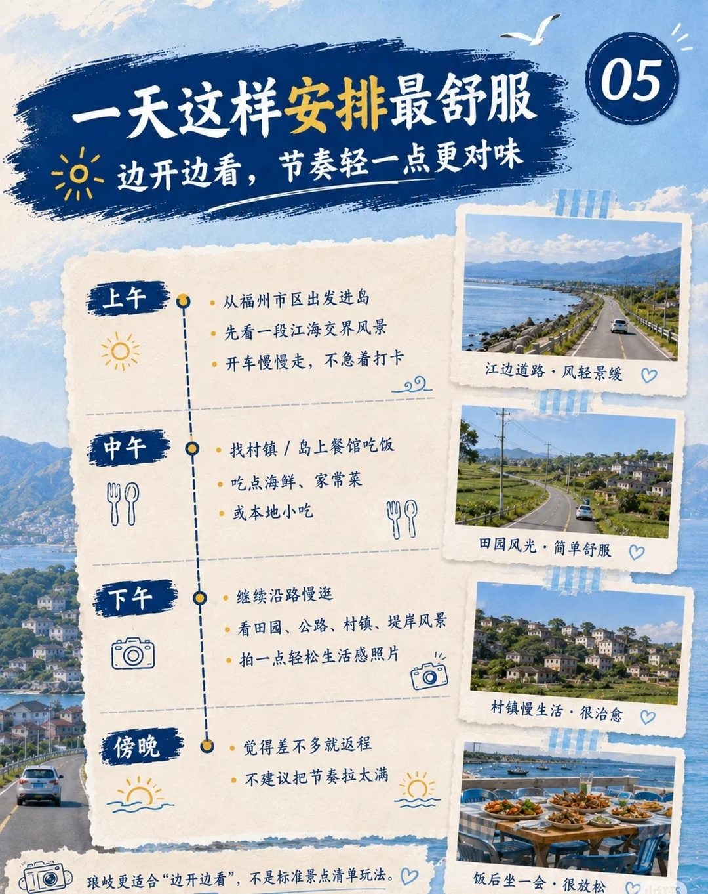
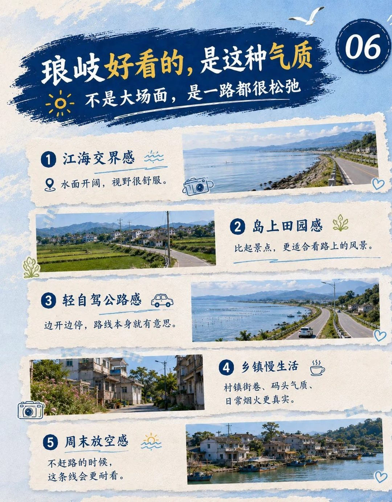
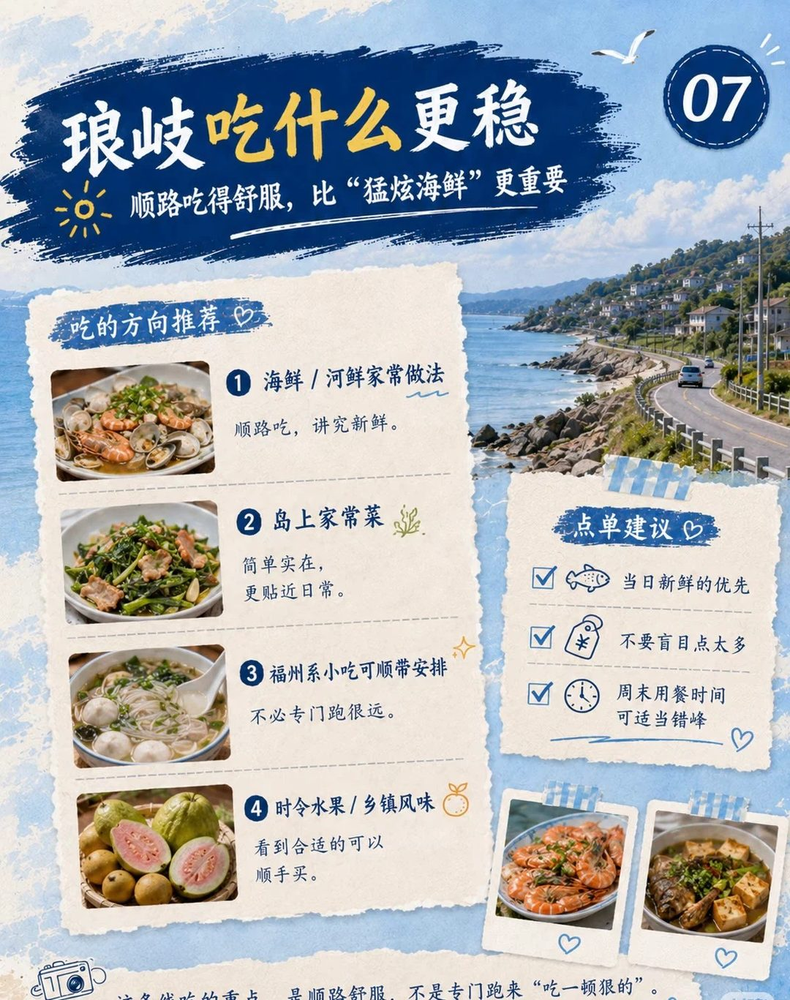
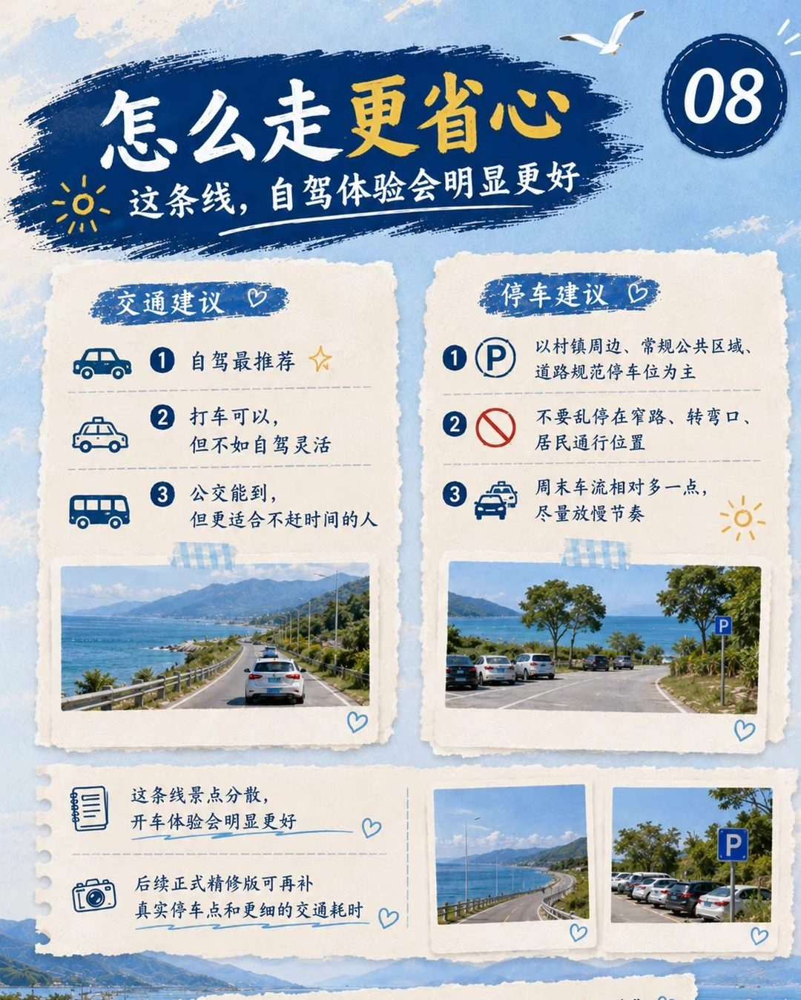
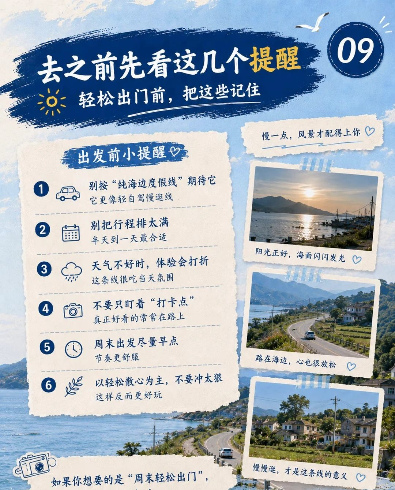

琅岐轻自驾慢逛线：半天到一天刚刚好

琅岐这条线不靠「网红感」，靠的是轻松：江海交界的堤岸、岛上的田园、村镇里的烟火气，开车边走边看，半天到一天刚好。下面 9 张卡，按顺序看就能出发。
先看适不适合去

- 适合：周末想开车散心、想轻松看风景不赶景点、喜欢田园感和江海交界的人。
- 不太适合：想一次打卡很多景点、想走「超出片网红路线」的人。
琅岐不是那种碧海蓝天大沙滩的海岛。不过想踩沙子也有地方：龙鼓度假村门口就是金鸡报晓海滩，退潮还能赶海。
从福州怎么去最顺

自驾最合适。福州市区开车约 40 分钟（看路况），过跨江大桥就上岛。看到舒服的堤岸、田园、村镇，随时停下来。不自驾也可以打车上岛，就是没那么灵活。
路线总览

- 推荐顺序：进岛 → 江边 / 海边堤岸 → 田园路慢开 → 村镇慢逛 → 找地方吃饭 → 再环一小段 → 返程。
- 半天轻松版：进岛 → 看江海风景 → 田园慢开 → 吃饭 → 回程。
- 一天完整版：进岛 → 堤岸风景 → 田园 / 村镇慢逛 → 午饭 → 下午继续绕岛看风景 → 傍晚返程。
一天这样安排最舒服

- 上午：从福州出发进岛，先看一段江海交界的风景，慢慢开，不急着打卡。
- 中午：在村镇或岛上餐馆吃饭，海鲜、家常菜、本地小吃都行。
- 下午：沿路继续慢逛，看田园、公路、村镇、堤岸。
- 傍晚：差不多了就返程，不用把行程排太满。
琅岐好看的，是这种气质

- 江海交界：水面开阔，视野很舒服。
- 岛上田园：比起景点，更适合看路上的风景。
- 轻自驾公路：边开边停，路本身就有意思。
- 乡镇慢生活：村镇街巷、码头，日常的烟火气。
- 周末放空：不赶路的时候，这条线更耐看。
琅岐吃什么更稳

- 海鲜、河鲜家常做法：顺路吃，讲究新鲜。
- 岛上家常菜：简单实在。
- 福州小吃顺带安排，不用专门跑远。
- 时令水果、乡镇风味：看到合适的顺手买。
点菜挑当天新鲜的，别一下点太多；周末吃饭可以错开饭点。
怎么走更省心

- 自驾最推荐，打车也行，公交能到但适合不赶时间的人。
- 停车找村镇周边、公共区域和规范车位，别停在窄路、转弯口和居民出入的地方。
- 周末车会多一点，放慢节奏。
去之前先看这几个提醒

小贴士
- 把它当「轻自驾慢逛线」，别按纯海边度假线期待。
- 别把行程排太满，半天到一天最合适。
- 天气不好时体验会打折，出发前看看天气。
- 别只盯着打卡点，好看的常常在路上。
- 周末尽量早点出发。
- 想多待一晚，就住在海边，第二天早上去沙滩走走。